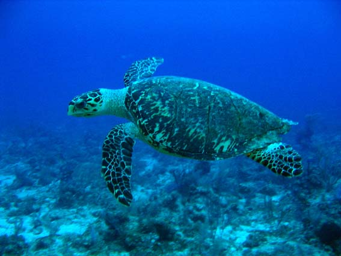

|  |
| 和名 | タイマイ[1] |
|---|
| 学名 | Eretmochelys imbricata |
|---|
| 属 | 爬虫綱カメ目
ウミガメ科タイマイ属 |
|---|
| 体長 | 63cm - 114cm |
|---|
| 生息地 | 太平洋、大西洋、インド洋
(極寒の海域を除く幅広い海洋) |
|---|
| ランク | 絶滅危惧IB類(EN,環境省 2014年)
絶滅危惧IA類(CR,IUCN 2001年) |
|---|
| 要因 | 食用目的や甲羅を目的とした乱獲 |
|---|
|
|
| 和名 | アオウミガメ[2] |
|---|
| 学名 | Chelonia mydas |
|---|
| 属 | 爬虫綱カメ目
ウミガメ科アオウミガメ属 |
|---|
| 体長 | 最大150cm |
|---|
| 生息地 | 世界各地の熱帯や亜熱帯の沿岸地域 |
|---|
| ランク | 絶滅危惧II類(VU,環境省 2014年)
絶滅危惧IB類(EN,IUCN 2001年) |
|---|
| 要因 | 肉や卵を目的とした乱獲、船のスク
リューに巻き込まれる、魚網にかか
る、産卵地域が荒らされることによ
る個体数の減少 |
|---|
|
|
| 和名 | キクザトサワヘビ[3] |
|---|
| 学名 | Opisthotropis kikuzatoi |
|---|
| 属 | 爬虫綱トカゲ目
ナミヘビ科サワヘビ属 |
|---|
| 体長 | 45cm - 55cm |
|---|
| 生息地 | 沖縄諸島久米島(日本) |
|---|
| ランク | 絶滅危惧IA類(CR,環境省 不明)
絶滅危惧IA類(CR,IUCN 1994年) |
|---|
| 要因 | 人間の森林開発による生息域の減少
や観賞用による乱獲 |
|---|
|